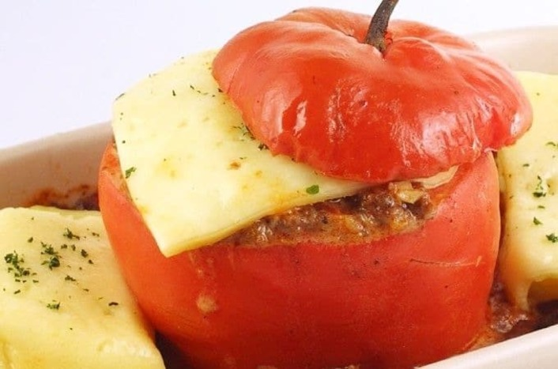
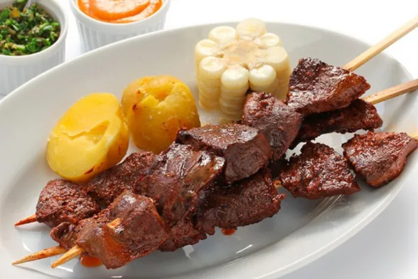
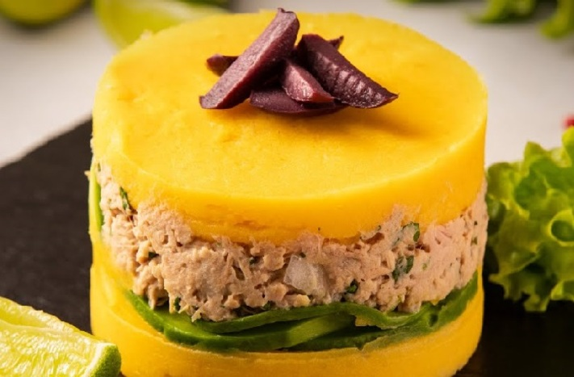
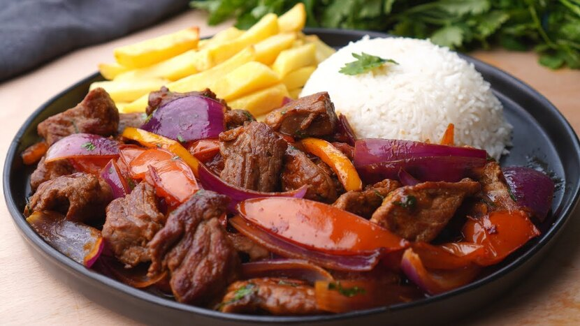
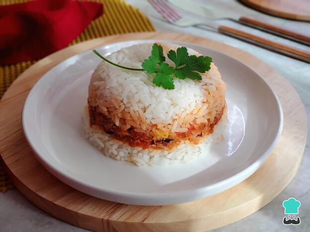
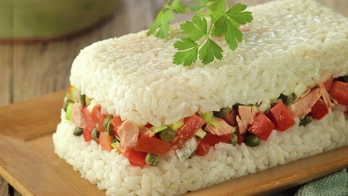
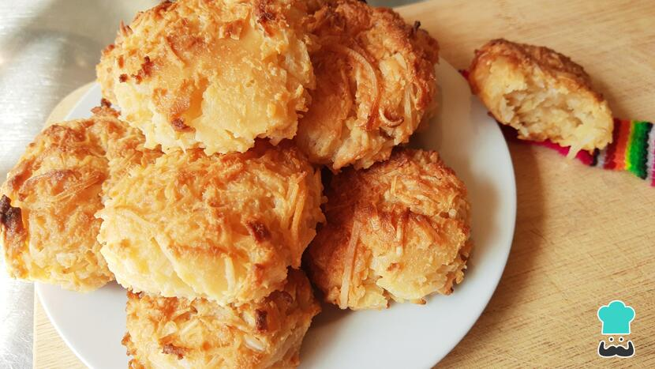

Explorar nuevas recetas en la comodidad de tu hogar puede ser una experiencia gratificante y emocionante.
Desde platillos reconfortantes que evocan recuerdos hasta creaciones audaces que despiertan tus papilas gustativas, la
cocina casera ofrece un lienzo ilimitado para la creatividad culinaria. Ya sea que te aventures con ingredientes
locales o te atrevas con influencias globales, cada receta que creas refleja el cariño y la dedicación que pones
en tu cocina.
Recetas
Ceviche de pescado
Refrescante, ácido y delicioso
6 a 8 porciones
×
Ingredientes
Preparación
1. Lavar el pescado y cortarlo en cuadrados.
2. Sazonar con el jugo de limón, el ajo, el ají molido, la sal y la pimienta.
Dejar reposando durante una hora.
3. Añadir la cebolla, el ají, el apio y el culantro. Dejar una hora más.
4. Servir acompañado de lechuga, choclos y trozos de camote.¡Llegó el momento de comer!

Rocotos rellenos
Picante, sabroso y tradicional
8 porciones
×
Ingredientes
Preparación
1.Quitar las tapas de los rocotos, retirar semillas y dejarlos 24 horas en agua con sal, cambiando varias veces al agua.
Luego lavarlos bein con agua caliente y escurrilos boca abajo.
2. Mezclar el ajo molido con la cebolla, el queso, la leche evaporada, los huevos, la sal y la pimienta.
3. Rellenar los rocotos con esta preparación y acomodarlos en un recipiente refactario aceitado con las papas cocidas.
Espolvorear perejil picado.
4. Llevar al horno a temperatura media aproximadamente 40 minutos.
5. Retira del horno y listo.¡Llegó el momento de servir!

Anticuchos de corazón
Sabroso, tradicional y asado
10 porciones
×
Ingredientes
Preparación
1. Limpiar los corazones de nervios y cortarlos en torozos pequeños.
2. Colocar en un tazón los corazones con sal, pimienta, ajos, comino y los ajíes.
3. Cubrir con vinagre. Dejar macerar de un día para otro.
4. Al momento de la preparacción escurrir los trozos de corazón y colocarlos en cañitas o alambres (pueden ir de 4 a 6 porciones).
5. Cocer a la brasa y con una brocheta de panca de cochlo, ir impregnando los ingredientes macerados
¡Llegó el momento de servir!
Tamalitos verdes
Aromático, sustancioso y variado
10 porciones
×
Ingredientes
Para el relleno
Preparación
1. Desgranar los choclos, molerlos o licuarlos.
2. Colocar la manteca en un sartén y cuando esté derretida freir la cebolla, los ajos, el ají y sazonar con sal y pimienta.
3. Separar parte de esta preparación para el relleno.
4. El aderezo restante colocarlo en una cacerola, agregarle el choclo molido y el culantro, remover constantemente con una cuchara hasta que esté atamalado y brillante.
5. Cocer el chancho en agua con sal. Cortarlo en trocitos, añadir el ají, los huevos, las aceitunas y la preparación que se reservó.
6. Colocar en una panca una cucharada de la masa, un poco de relleno y más masa; envolver y armar con tiritas de la misma panca.
7. Cocer los tamalitos en muy poca agua, sobre las corontas de los choclos por 1 hora aproximadamente.
¡Llegó el momento de servir!

Causa rellena con atun
Deliciosa, sabrosa y abundante
6 porciones
×
Ingredientes
Para el relleno
Preparación
1. Pasar las papas por un prensa-papas, amasar bien con el aceite, la sal, pimienta, el ají y el jugo de limón.
2. Aparte, mezclar el atún con la mitad de mayonesa y las aceitunas.
3. Hacer otra mezcla con la mayonesa restante, la cebolla, el perejil, el huevo y la palta.
4. Forrar un molde engrasado con una capa de masa de papa, encima colocar la mezcla de atún otra masa de papa.
5. Luego colocar la preparación de huevo y palta, y terminar con masa de papa
6. Reposar por una hora.¡Llegó el momento de servir!
Escabeche de pescado
Agridulce, marinado y sabroso
6 porciones
×
Ingredientes
Para la salsa
Preparación
1. Sazonar con sal y pimienta los filetes de pescado, enharinarlos y freir en aceite caliente. Reservar.
2. Freír en el aceite los ajos, la cebolla y el ají.
3. Añadir el comino, la sal, la pimienta y el vinagre.
4. Acomodar en una fuente la lechuga y colocar el pescado y encima la salsa.
5. Decorar con los huevos duros.
¡Llegó el momento de comer!

Lomo saltado
Delicioso, picante y salteado
6 porciones
×
Ingredientes
Preparación
1. Cortar la carne en trozos pequeños.
2. Freir en el aceite el ajo y añadir la carne. Retirar un poco del jugo que soltó la carne y reservarlo
3. Agregar el tomate licuado, la sal y pimienta. Dejar cocer por unos minutos.
4. Incorporar la cebolla, las tiritas de ají, el perejil y el vinagre.
5. Continuar con la cocción unos minutos y agregar el jugo de la carne.
5. Aparte, freír las papas en aceite caliente y agregarlas a la preparación.
6. Servir acompañados de arroz.¡Llegó el momento de comer!
Aji de gallina
Cremoso, picante y clásico
6 porciones
×
Ingredientes
Preparación
1. Cocer la gallina en agua con sal, hasta que esté tierna. Enfriar y desmenuzar.
2. Freír en el aceite los ajos, la cebolla y el aji licuado. Agregar el pan remojado en caldo de gallina o leche y licuarlo. Cocer durante 10 minutos
3. Añadir la leche, la gallina desmenuzada, el queso rallado, las nueces molidas, sal y la pimienta.
4. Colocar en una fuente las papas cortadas en dos y cubrir con la preparación anterior.
5. Decorar con las aceitunas y las rodajas de huevo duro.
¡Llegó el momento de comer!
Sudado de pescado
Aromático, marinero y sabroso
6 porciones
×
Ingredientes
Preparación
1. Sazonar los filetes con pimienta y sal, enharinarlos y freirlos en 4 aceite.
2. El aceite restante calentarlo, freír las cebollas y los ajos.
3. Acomodar encima los filetes, espolvorear el culantro y el perejil.
4. Verter el jugo de limón, el vino y colocar los tomates. Dejar hervir tapado a fuego lento por unos minutos
¡Llegó el momento de servir!

Arroz tapado
Rico, colorido y gratificante
8 porciones
×
Ingredientes
Preparación
1. Freir en aceite los ajos, agregar las gotas de jugo de limón, la sal y el agua.
2. Dejar hervir e incorporar el arroz, cuando empieze a secar, bajar el fuego, tapar y continuar con la cocción hasta que esté listo.
Para el relleno
3. Freir en un poquito de aceite la cebolla, agregar la carne, el tomate, la salsa de tomate, pasas, aceitunas, el huevo y el perejil. Mezclar bien.
5. Engrasar un pirex, colocar la mitad del arroz, encima el relleno de carne y cubrir con el arroz restante.
¡Llegó el momento de servir!

Pastel de arroz con atun
Sabroso, nutritivo y satisfactorio
6 porciones
×
Ingredientes
Preparación
Salsa blanca
1. Colocar en una cacerola la mantequilla y sofreir la cebolla.
2. Agregar la harina y revolver bien.
3. Incorporar la leche poco a poco, la sal y pimienta. Continuar mezclando hasta que se espese.
Para el pastel
4. Mezclar el arroz cocido con los huevos crudos .
5. Enmantequillar un molde refactario y colocar una capa de arroz, otra de huevo, otra de tomate, una de atún y otra de queso.
6. Cubrir con salsa blanca.
7. Finalmente colocar otra capa de arroz, salsa blanca y espolvorear con el queso parmesano.
8. Llevar al horno a temperatura regular hasta que gratine.
9. Sacar del horno.¡Llegó el momento de servir!
Lasaña
satisfactoria, suculenta y clásica
6 porciones
×
Ingredientes
Para salsa blanca
Para la salsa de pollo
Preparación
Para la salsa blanca
1. En una olla al fuego, derretir la mantequilla y sofreir la cebolla.
2. Agregar la harina y la leche poco a poco, sazonar con sal y pienta. remover hasta que espese.
Para la salsa de pollo
3. En una olla al fuego, derretir la margarina, sofreir la cebolla y el ajo.
4. Agregar los demás ingredientes. Cocer durante 10 minutos.
Para la pasta
5. Cocer la pasta de lasaña en agua con sal y aceite hasta que este lista.
6. Aparte enmantequillar moldes individuales o una refactaria y colocar una capa de lasaña, una de salsa blanca, otra de queso en tajadas, salsa de pollo y continuar con el mismo procedimiento hasta cubrir el molde.
7. Finalmente, verter un poco de salsa y espolvorear el queso parmesano.
8. Llevar al horno a temperatura regular hasta que gratine.
¡Llegó el momento de comer!
Suspiros de limeña
Dulce, suave y tradicional
6 porciones
×
Ingredientes
Preparación
1. En una olla colocar las leches y llevar al fuego hasta formar un manjar blanco.
2. Retirar del fuego y añadir la vainilla y las yemas batidas.
3. Mezclar bien y colocar en copas individuales.
4. Aparte, colocar en una cacerola el azuca, dejar derretir hasta formar un almíbar.
5. Agregar el almíbar a las claras batidas a punto de nieve e incorporar correctamente.
6. Decorar con el merengue las copas y espolvorear la canela.
6. ¡Llegó el momento de comer!
Alfajor con manjar blanco
Dulce, tradicional y suculento
15 porciones
×
Ingredientes
Preparación
1. Cernir la harina, colocarla en forma de corona sobre una tabla, agregar margarina y el azucar.
2. Amasar hasta unir correctamente los ingredientes.
3. En una tabla enharinada, estirar la masa con un rodillo y dejarla delgada.
4. Cortar formas redondas y colocarlas sobre latas enmantequilladas.
5. Pincharlas con un tenedor y hornearlas a temperatura suave, hasta que doren ligeramente.
6. Retirar del horno, dejar enfriar y rellenar con manjar blanco, colocando un redondel encima del otro.
7. Espolvorear azúcar en polvo.
¡Llegó el momento de comer!
Picarones
Esponjosos, dulces y fritos.
15 porciones
×
Ingredientes
Preparación
1. Cocer en el agua el zapallo, el camote con el clavo y canela
2. Disolver la levadura en un poco de agua tibia y dejar reposar unos minutos.
3. Colocar en la mesa de trabajo la harina, levadura, el camote y el zapallo con el agua en que se cocinó.
4. Batir la masa, agregar la sal y el anís. Continuar batiendo hasta que quede espesa, pareja y amarilla.
5. Dejar reposar la masa en un tazón, tapada con un lienzo y esperar que levante y doble su volumen.
6. Calentar el aceite en un sartén hondo.
7. Preparar los picarones con las manos humedecidas en agua con sal.
8. Tomar porciones de masa a la cual se le hace una cavidad grande en el centro. Freír y voltear con la ayuda de un palito.
9. Servir calientes con la miel de chancaca
¡Llegó el momento de comer!
Pionono
Delicado, dulce y esponjoso
10 porciones
×
Ingredientes
Preparación
1. A las claras a punto de nieve, agregarles poco a poco en azúcar, luego las yemas de una a una.
2. Mezclar y cernir la harina, el chuño y el polvo de hornear.
3. Añadir de poco a poco el batido, agregar la canela, vainilla y el pisco.
4. Vaciar la preparación en una lata engrasada rentangular.
5. Hornear a 200° durante 15 minutos.
6. Retirar del horno y rellenar con manjar y espolvorear el azúcar en polvo.
¡Llegó el momento de comer!

Cocadas
Dulce, tropicales y exquisitas
8 porciones
×
Ingredientes
Preparación
1. Hervir el agua de coco, el agua y el azúcar, hasta que empiece a tomar punto
2. Añadir el coco rallado y continuar la cocción hasta que al mover con la cuchara, se vea el fondo.
3. Retirar del fuego, añadir las yemas y el oporto.
4. Revolver bien, llevar de nuevo unos minutos al fuego.
5. Colocar en una dulcera y espolvorear canela si desea.
¡Llegó el momento de comer!
Leche asada
Cremosa, caramelizada y deliciosa
10 porciones
×
Ingredientes
Para el caramelo:
Preparación
1. Mezclar correctamente la leche condensada, la leche evaporada, el azúcar, la vainilla y los huevos batidos.
2. Aparte, preparar el caramelo con el azúcar y agua.
3. Repartir el caramel en moldes refractarios individuales y verter la mezcla en cada uno de ellos.
4. Llevar al horno a baño maria hasta que tome consistencia y este ligeramente dorada.